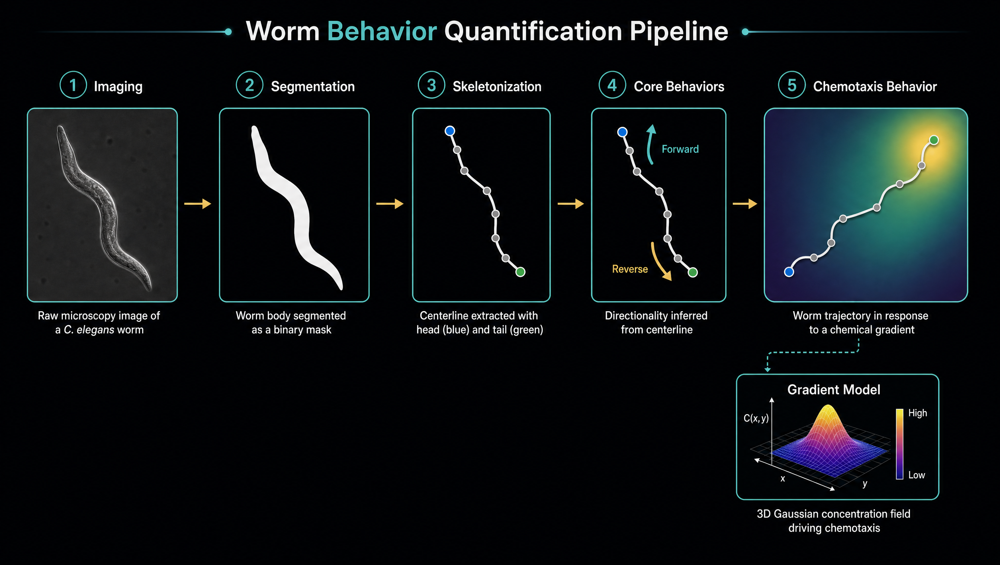
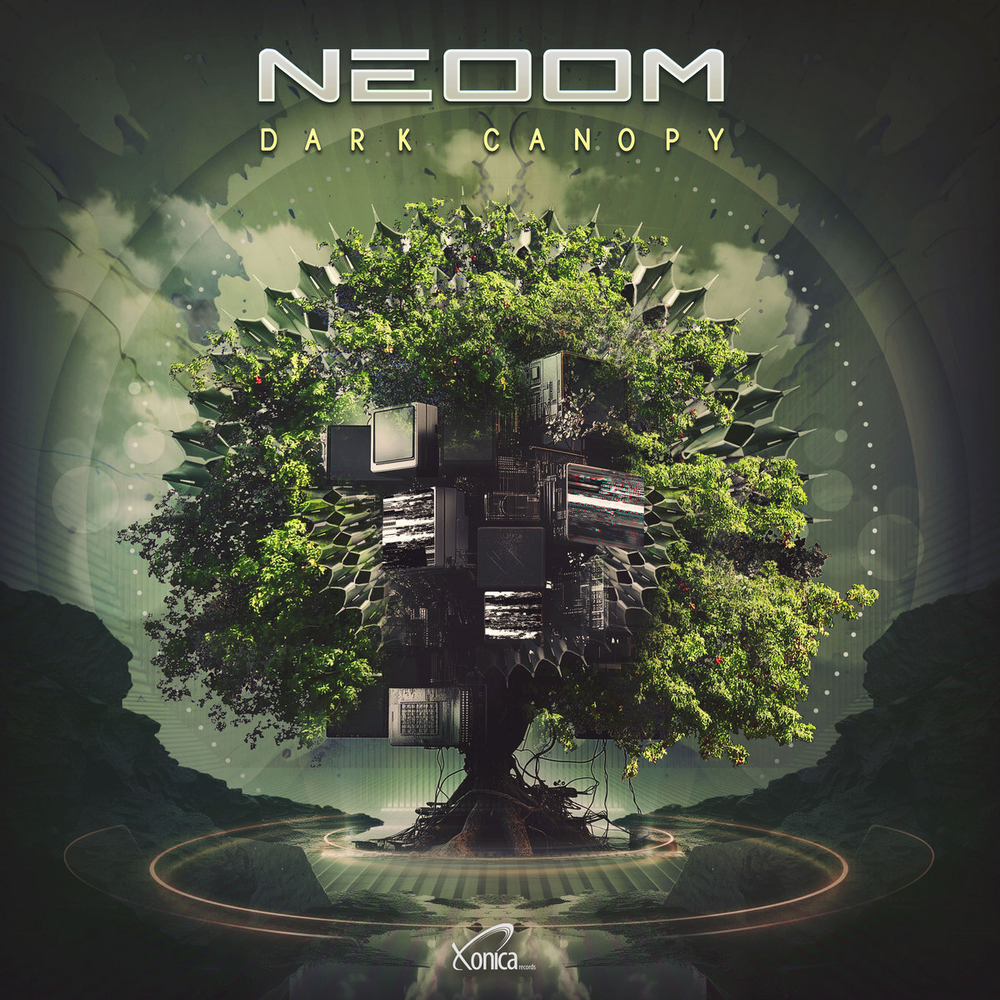
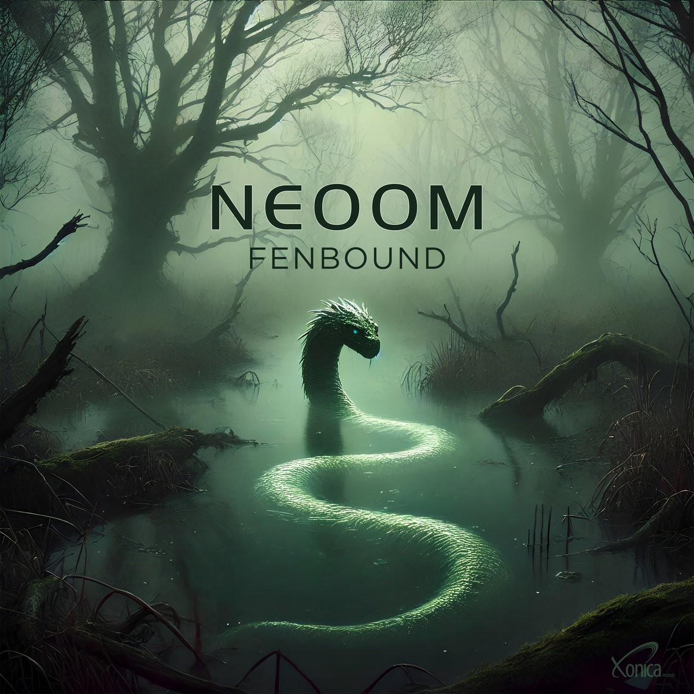
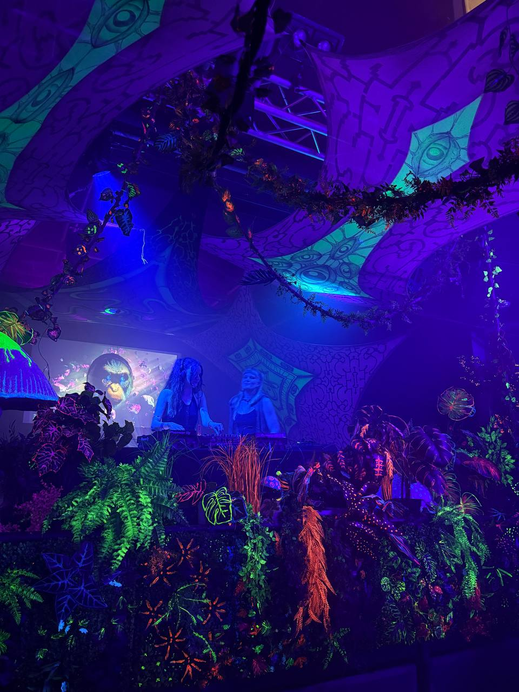
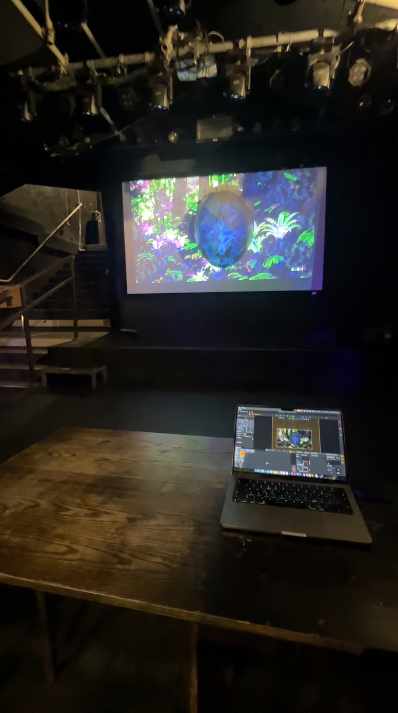
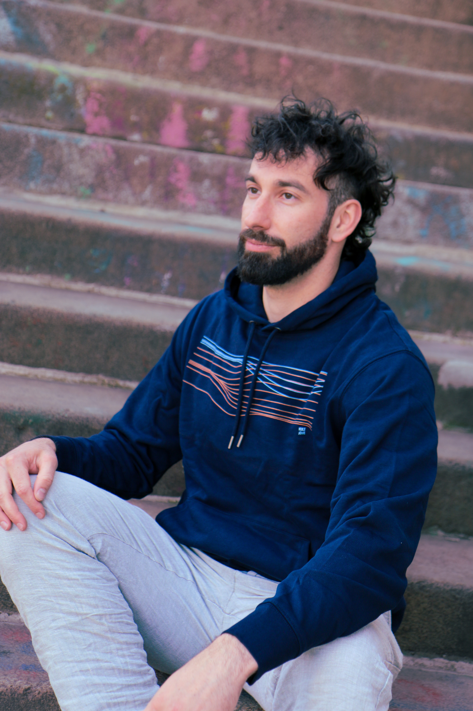

One technical-creative mind — science-grade engineering, music, and immersive-event craft, woven into a single practice.
Years of research spent building the technical backend — data-analysis pipelines, computer-vision and machine-learning tooling, and HPC workflows in Python — to quantify behavior and neural activity at scale.
A technical generalist: much of the work was identifying the next computational problem and finding the newest tools to solve it. Modern AI workflows collapse the time-to-learn — what's left is framing the problem and choosing the cleanest approach.

What began as a hobby in 2011 has grown into a sustained creative practice. As Neoom I produce dark-psy and hypnotic techno — a deep, nocturnal, hypnotic sound — carried from late-night studio sessions to professional releases on established underground labels.
Fifteen years of synthesis, mixing, sound design and arrangement, plus creative coding for custom audio tools and plugins. The same DSP and signal-analysis instinct runs straight through the technical side of my work — sound and code as one discipline.



Co-founder of Tohuwabohu — leading projection-mapped visuals and physical installations for immersive events. Custom shader coding; music and handcrafted visuals fused into one experience.


Computational data scientist and creative technologist based in Vienna. Research years (MSc + doctoral work in computational neuroscience) building the engineering backend; now bringing that toolkit to computational data science and creative technology. Complemented by a formal IT & Media Technology diploma and 15 years of music production.
Python data-analysis pipelines for behavioral & neuronal datasets; CV + ML pipeline for automated behavior quantification; batch jobs on HPC/SLURM; statistical modelling & visualization; reproducible, version-controlled codebases.
Electrophysiology analysis in Python; processing & visualizing large voltage-clamp datasets; molecular modelling.
15 years producing dark-psy / hypnotic techno; releases on Universal Tribe & Xonica; synthesis, mixing, sound design, creative coding for audio tools.
Projection-mapped visuals and physical installations for immersive events; custom shader coding.
The five-year technical diploma everything else is built on: programming (HTML/CSS/JavaScript), software development, IT infrastructure, and media technology (Photoshop, Premiere / video production).